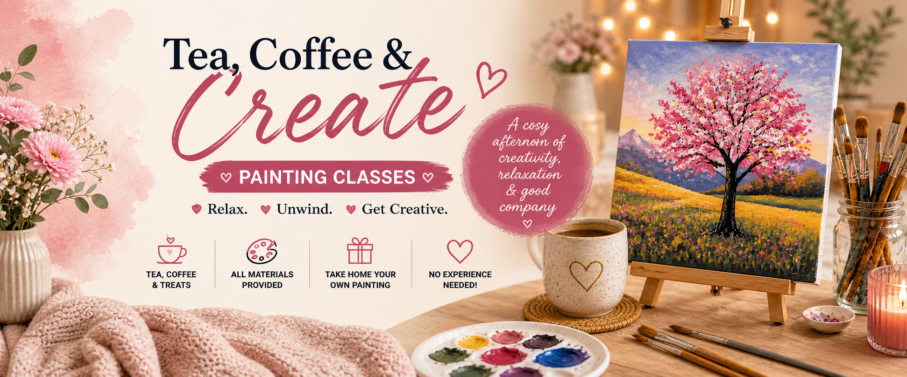

Tea, Coffee & Create Painting Classes
Tea, Coffee & Create is a cosy and welcoming adult painting experience in Tullamore, designed for anyone looking to relax, unwind, and get creative in a friendly atmosphere. Our step-by-step guided painting classes are perfect for complete beginners as well as anyone who simply wants to enjoy a calm and creative afternoon - no previous art experience is needed, just come along, enjoy a cup of tea or coffee, and discover your creative side. Each class includes all painting materials, tea, coffee & treats, step-by-step guidance, a relaxed, welcoming atmosphere, and your own finished painting to take home. It's ideal for relaxing 'me time', trying something new, catching up with friends, creative gifts or experiences, and meeting like-minded local people. We regularly host themed painting workshops and seasonal creative events in Tullamore, with new classes added throughout the year - perfect for beginners, hobby artists, and anyone looking for a cosy creative experience in Offaly. Based in Tullamore, Co. Offaly.
View on Google Maps →